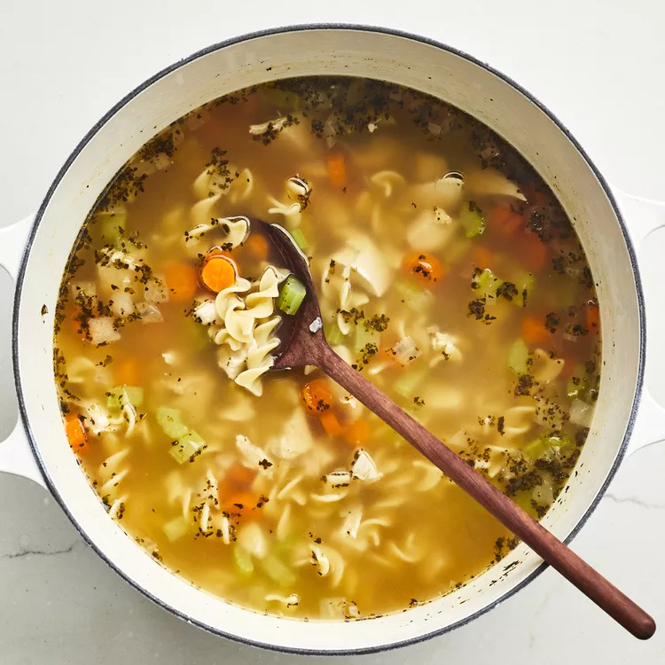

Chicken Noodle Soup

Description
A chicken noodle soup recipe that's a very easy,
very good substitute for when you don't have time to make your soup totally from scratch.
This chicken noodle soup recipe can be on the table in just 40 minutes!
Whether you're feeling under the weather or you're just in need of a little comfort,
this comforting soup will warm you up from the inside out.
Ingrediens
- 1 tablespoon butter
- 0,5 cup chopped onion
- 0,5 cup chopped celery
- 4 cans chicken broth
- 1 can vegetable broth
- 0,5 pound chopped cooked chicken breast
- 1,5 cups egg noodles
- 1 cup sliced carrots
- 0,5 teaspoon dried basil
- 0,5 teaspoon dried oregano
- salt and ground black pepper to taste
Steps
- Melt butter in a large pot over medium heat.
Add onion and celery and cook until just tender, about 5 minutes.
- Add chicken broth, vegetable broth, chicken, egg noodles, carrots, basil, oregano, salt, and pepper.
Stir to combine and bring to a boil.
- Reduce heat and simmer for 20 minutes.